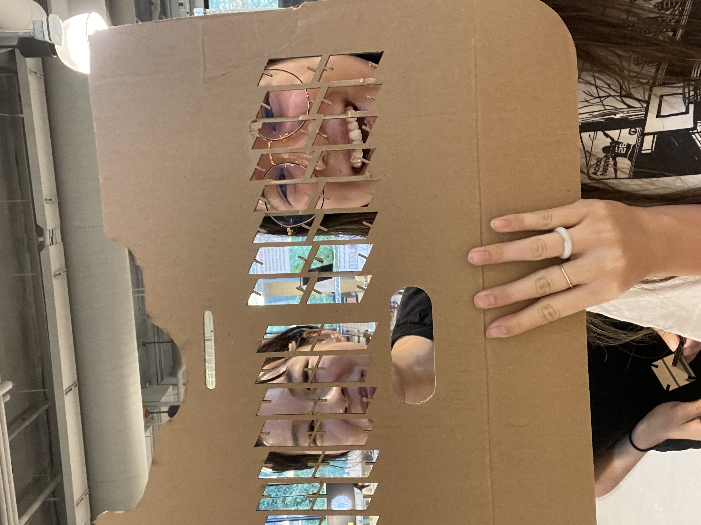

Assignment 1: Modeling and Laser Cutting
By Vanessa Chien Lai - HCDE 533
Quick preview of my final construction kit!

From the start, I envisioned two different kinds of pieces: "nodes" and "connectors", reminiscent of the construction games I used to play with when I was a kid.
I started doing a quick and dirty prototype using a La Croix box I had, which already had perfect circles imprinted from the cans (thanks La Croix!)
I also made some parallelograms and made cuts perpendicular to the edges, and made a neat little construction.

Because my La Croix circles were a little too big, I decided to make them just a bit smaller and go with a diameter of 40mm.
Then, I created my circles and parallelograms in Rhino, with notches that were just a tad thinner than the width of my cardboard.
I created shapes and then made rectangles for the notches, and used the CurveBoolean command to isolate the shape I wanted.
.png)
I struggled a bit to get the circles the right size, but the fit was great on the first try!
My parallelograms failed on the first try because I forgot to cut perpendicular to the edge, but second time's the charm.

My final pieces came together just like the prototype! I used my failed parallelograms to add little feet to the structure.
My notches ended up being 2mm wide for 2.5mm cardboard.
------
Laser cutter settings:
45 speed
50 power
50 frequency
------

Acknowledgments:
------
Annie Lin for her moral support from start to finish, as well as her HTML/CSS knowledge.
Emily Rowland for her help with Rhino and Illustrator.
Anna from the MILL, who guided me every step of the way on the laser cutter.
------
Rhino Files (extruded and flat) here:

Final result: